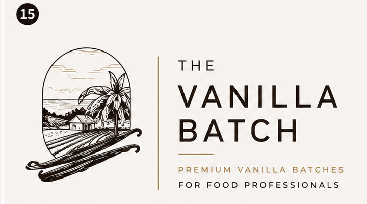
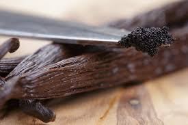
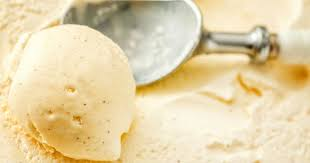
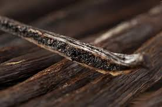
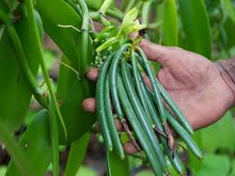
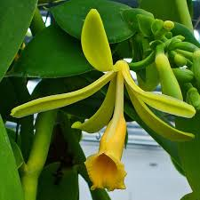

250g
1 gesloten batch
€59 Bestel proefbatch
Premium vanilla batches for food professionals
Vacuüm verpakt per gesloten 250g batch, batch-gecontroleerd en scherp geleverd aan Nederlandse ijsmakers, patissiers, chocolatiers en foodprofessionals.
Conceptprijzen ex. btw · Productspecificatie en batchinformatie op aanvraag

Eerste productlijn
Hoogwaardige hele vanillestokjes voor professionele toepassingen waarin echte vanille zichtbaar, ruikbaar en proefbaar moet zijn.
De bonen zijn donker, soepel en aromatisch. Ze worden geleverd in gesloten vacuümverpakkingen van 250 gram. Wij openen, malen, mengen of herverpakken de batches niet. Daardoor blijft de verpakking helder, praktisch en geschikt voor professionele voorraadadministratie.
Van 250g proefbatch tot 10kg+ maatwerk: iedere bestelling wordt opgebouwd uit originele gesloten batches.
Conceptprijzen ex. btw
Klein genoeg om professioneel te testen. Schaalbaar genoeg voor vaste productie. Vanaf 10kg maken we een maatwerkprijs vanaf circa €169/kg.
| Hoeveelheid | Opbouw | Prijs ex. btw | Prijs per kg |
|---|---|---|---|
| 250g | 1 gesloten batch | €59 | €236/kg |
| 500g | 2 gesloten batches | €109 | €218/kg |
| 1kg | 4 gesloten batches | €199 | €199/kg |
| 2kg | 8 gesloten batches | €379 | €189,50/kg |
| 5kg | 20 gesloten batches | €895 | €179/kg |
| 10kg+ | 40+ gesloten batches | Offerte | vanaf ca. €169/kg |
1 gesloten batch
€59 Bestel proefbatch2 gesloten batches
€109 Aanvragen4 gesloten batches · zakelijke instap
€199 Staffelprijs8 gesloten batches
€379 Staffelprijs20 gesloten batches · voor vaste productie
€895 Offerte aanvragen40+ gesloten batches
Maatwerk Plan adviesgesprekAdvies voor meeste professionals: start met 250g om te testen. Werk je structureel met vanille? Dan is 1kg de logische zakelijke instap. Alle prijzen zijn conceptprijzen exclusief btw. Alle bestellingen worden opgebouwd uit gesloten vacuümverpakte batches van 250 gram. Definitieve prijs afhankelijk van batch, voorraad en volume.
Voor professionals

Gebruik: vanille-ijs, roomijs, gelato, custardbases en infusies.
Voordeel: volle romige smaak, zichtbaar merg en constante batchkwaliteit.

Gebruik: banketroom, crème brûlée, bavarois, crème anglaise, tartelettes en desserts.
Voordeel: rijke geur, mooie puntjes en een premium uitstraling.

Gebruik: ganache, pralines, truffels, witte chocolade en karamels.
Voordeel: rondere smaak, subtiele diepte en betere balans met cacao.
Gebruik: desserts, sauzen, roominfusies, specials en mise-en-place.
Voordeel: professionele kwaliteit zonder groot minimumvolume.

Gebruik: zuivel, desserts, sauzen, bakkerijproducten en premium foodconcepten.
Voordeel: batchcontrole, herhaalbaarheid, specificaties en volumeprijzen.

Gebruik: delicatessen, professionele ingrediënten en premium retailverpakking.
Voordeel: duidelijke positionering, staffels en zakelijke informatie op aanvraag.
Wat krijg je precies?
Foodprofessionals willen weten wat ze inkopen. Daarom maken we product, verpakking, documentatie en levering zo concreet mogelijk.
Hele Madagascar Bourbon vanillestokjes, Vanilla planifolia, premium / gourmet grade.
Gesloten vacuümverpakking per 250g. Wij openen, mengen, malen of herverpakken niet.
Productspecificatie, batchinformatie en COA op aanvraag beschikbaar.
Batchnummer, THT, herkomst en controle-informatie worden per partij vastgelegd.
Uit Nederlandse voorraad. Bij beschikbare voorraad doorgaans verzending binnen 1–2 werkdagen.
Factuur mogelijk, staffels vanaf 1kg en vaste klantafspraken bij terugkerend volume.
Zo werkt een proefbatch
Een 250g batch is bedoeld als professionele instap: genoeg om serieus te testen, zonder direct groot volume in te kopen.
Geef aan wie je bent, hoeveel je gebruikt en waarvoor je de vanille wilt inzetten.
We delen beschikbaarheid, conceptprijs, productspecificatie en batchinformatie op aanvraag.
Beoordeel geur, soepelheid, smaak, merg en verwerking in ijs, patisserie, chocolade of foodproductie.
Bij een goede match schaal je eenvoudig op naar 1kg, 2kg, 5kg of zakelijke maatwerkafspraken.
Waarom The Vanilla Batch?
| Alternatief | Nadeel voor professionals | The Vanilla Batch |
|---|---|---|
| Consumentenverpakking | Vaak duur per gram en niet praktisch voor productie. | Zakelijke staffels vanaf 250g en 1kg. |
| Anonieme bulk | Wisselende kwaliteit en weinig informatie over batch of herkomst. | Batch-gecontroleerd met specificatie op aanvraag. |
| Groot minimumvolume | Hoge instap voordat je de kwaliteit kent. | Starten met één gesloten 250g batch. |
| Onduidelijke handel | Weinig verhaal, weinig documentatie en lastige prijsopbouw. | Heldere prijzen, praktische keten en transparante batchinformatie. |
Eerste batch testen
Onze eerste Madagascar Bourbon Batch 250 is beschikbaar voor foodprofessionals die de kwaliteit zelf willen beoordelen. Start met 250g, vergelijk in je eigen receptuur en schaal op wanneer de batch past bij jouw productie.
Slim verpakt
250 gram is klein genoeg om laagdrempelig te testen en groot genoeg om professioneel mee te werken.

[PLACEHOLDER: vervang later door echte foto van de 250g vacuümverpakking]
Kwaliteit & controle
Voor professioneel gebruik gaat het om het totaalbeeld: lengte, soepelheid, vochtbalans, aromatische intensiteit, zichtbaar merg, verpakking, opslag en herhaalbaarheid per batch.
Donkere, buigzame bonen die prettig verwerken.
Warm, romig en klassiek Bourbon-profiel.
Specificaties, batchinformatie en COA op aanvraag.
Gesloten vacuüm per 250g voor kwaliteit en voorraadbeheer.
Over The Vanilla Batch
The Vanilla Batch is ontstaan vanuit een eenvoudige overtuiging: hoogwaardige vanille verdient een betere keten.
Madagascar Bourbon vanille is een uitzonderlijk product. De kwaliteit ontstaat niet op één moment, maar door de hele keten: van bloei en handbestuiving tot oogst, fermentatie, droging, sortering, rijping en transport.
Wij zagen dat foodprofessionals vaak moeten kiezen tussen anonieme bulk, hoge consumentenprijzen of onduidelijke kwaliteit. Daarom richten wij ons op premium Madagascar Bourbon vanille in overzichtelijke, gesloten batches van 250 gram.
Groot genoeg voor serieus professioneel gebruik. Klein genoeg om laagdrempelig te testen. En schaalbaar voor bedrijven die vaker met echte vanille werken.
Wij willen premium vanille bereikbaar maken voor ijsmakers, patissiers, chocolatiers, chefs en foodproducenten — zonder concessies te doen aan kwaliteit.
Daarbij hoort een praktische en transparante keten. Vanille begint niet in een magazijn, maar bij mensen in Madagaskar: boeren, verwerkers, sorteerders en lokale partners die met kennis en handwerk een bijzonder product maken.
Met The Vanilla Batch bouwen we stap voor stap aan een professionele standaard: hoogwaardige vanille, helder verpakt, scherp geleverd en met respect voor waar het vandaan komt.

[PLACEHOLDER: vervang later door eigen foto van herkomst, partner of verwerking]
[PLACEHOLDER: concrete partnerinformatie, foto’s en batchdocumenten worden later toegevoegd.]
Herkomst
Wij werken met een geselecteerde exportpartner in Madagaskar. De bonen worden per batch geselecteerd, gecontroleerd en vacuüm verpakt voordat ze via een professionele importketen naar Nederland komen.
Vanuit Nederlandse voorraad leveren wij snel aan makers die met echte vanille werken. Productspecificaties, batchinformatie en COA zijn op aanvraag beschikbaar.
[PLACEHOLDER: voeg later echte informatie toe over exportpartner, batchdocumentatie, foto’s en controleproces.]
Levering & zakelijk
Bij beschikbare voorraad leveren we snel aan Nederlandse foodprofessionals.
Formulering blijft afhankelijk van voorraad, volume en afleveradres.
Voor professionele klanten kunnen we op aanvraag op factuur leveren.
Vanaf 5kg en 10kg+ denken we mee over voorraad, staffel en herhaalbestelling.
Proefbatch
Test geur, structuur, smaak en verwerking in je eigen receptuur voordat je opschaalt naar 500g, 1kg, 2kg of meer.
FAQ
Alleen als dit aantoonbaar gecertificeerd is, mogen we dat claimen. Voor nu gebruiken we die claim niet. Eventuele certificering kan later worden toegevoegd als [PLACEHOLDER].
Bourbon vanille verwijst naar Vanilla planifolia uit de Bourbon-regio, waaronder Madagaskar. Het profiel is vaak warm, romig en klassiek.
250g is praktisch: klein genoeg om te testen, groot genoeg voor professioneel gebruik en eenvoudig op te schalen.
Bewaar gesloten verpakkingen koel, droog en donker. Vermijd direct zonlicht, warmte en temperatuurschommelingen.
De THT hangt af van batch, verpakking en opslag. De actuele THT staat op verpakking of batchinformatie.
Ja. Vanaf 1kg zijn staffelprijzen mogelijk. Voor 5kg en 10kg+ maken we een maatwerkvoorstel.
The Vanilla Batch is primair gericht op foodprofessionals en zakelijke klanten.
Ja. Productspecificaties, batchinformatie en COA zijn op aanvraag beschikbaar.
Gourmet grade is doorgaans soepeler en geschikter voor zichtbare premium toepassingen. Extract grade wordt vaker gebruikt voor extractie of industriële verwerking.
Ja, de bonen zijn geschikt voor roomijs, gelato, custardbases en infusies.
Ja, voor banketroom, crème brûlée, ganache, pralines en luxe desserts.
Wij leveren uit Nederlandse voorraad. Exacte levertijd hangt af van beschikbaarheid, volume en afleveradres.
Ja. De kleinste professionele eenheid is één gesloten batch van 250 gram.
Zakelijke bestellingen op factuur zijn mogelijk na aanvraag en acceptatie.
Contact
Laat je gegevens achter. We reageren met de juiste informatie voor jouw toepassing en gewenste volume.